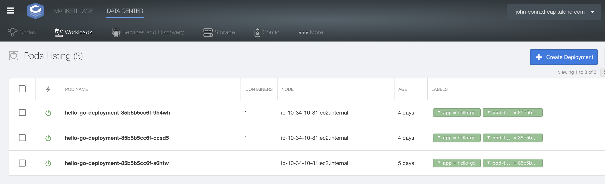
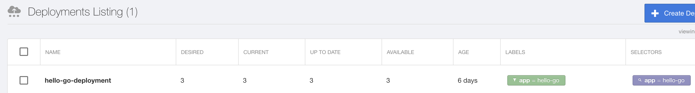

Pre-requisites:
A Critical Stack cluster. You will need to know your username and password. This lab is more interesting if you have already deployed an app so that you can view the resources created by command line.
kubectl installed : kubectl
Intro Lifted from kubernetes.io
Kubectl is a command line interface for running commands against Kubernetes clusters. This overview covers kubectl syntax, describes the command operations, and provides common examples. For details about each command, including all the supported flags and subcommands, see the kubectl reference documentation.
Use the following syntax to run kubectl commands from your terminal window:
kubectl [command] [TYPE] [NAME] [flags]
where command, TYPE, NAME, and flags are:
command: Specifies the operation that you want to perform on one or more resources, for example create, get, describe, delete.Type: Specifies the resource type. Some examples are : pods, nodes, services, deployments. Resource types are case-insensitive and you can specify the singular, plural, or abbreviated forms. For example, the following commands produce the same output:
kubectl get pod pod1
kubectl get pods pod1
kubectl get po pod1
NAME: Specifies the name of the resource. Names are case-sensitive. If the name is omitted, details for all resources are displayed.
flags: Specifies optional flags. For example, you can use the -s or –server flags to specify the address and port of the Kubernetes API server.
There are a few ways to run kubectl commands with the Critical Stack Cluster. You can ssh into a master node and download external-admin.conf from your cluster’s S3 bucket (but is complicated to use since master nodes are not accessible directly). For now, we recommend to SSH into a master node.
By default kubectl uses the configuration in $HOME/.kube/config. If you want to run commands against multiple servers (CS or minikube) you will need a multi config file or use Environment variables.
To view your current config you can run this command:
kubectl config view
```console kubectl config view apiVersion: v1 clusters:
Lets test our a few commands and compare with what we see in the UI.
kubectl get pods
$ kubectl get pods
NAME READY STATUS RESTARTS AGE
hello-go-deployment-85b5b5cc6f-9h4wh 1/1 Running 0 4d
hello-go-deployment-85b5b5cc6f-ccsd5 1/1 Running 0 4d
hello-go-deployment-85b5b5cc6f-s6htw 1/1 Running 0 5d

Note you will have have access to the resource types that your have permission to view/create within your namespace. If you are the cluster admin you will have permission to see all namespaces and resources.
In this example, I have 3 pods running all from one deployment. Let’s take a look at the deployment:
kubectl get deployments
$ kubectl get deployments
NAME DESIRED CURRENT UP-TO-DATE AVAILABLE AGE
hello-go-deployment 3 3 3 3 6d

To view the configuration for this deployment, run this command:
kubectl describe deployment
$ kubectl describe deployment
Name: hello-go-deployment
Namespace: <namespace>
CreationTimestamp: Wed, 17 Apr 2019 10:18:24 -0400
Labels: app=hello-go
Annotations: deployment.kubernetes.io/revision=3
Selector: app=hello-go
Replicas: 3 desired | 3 updated | 3 total | 3 available | 0 unavailable
StrategyType: RollingUpdate
MinReadySeconds: 0
RollingUpdateStrategy: 1 max unavailable, 1 max surge
Pod Template:
Labels: app=hello-go
Containers:
hello-go:
Image: jabbottc1/hello-go:0.0.3
Port: 8080/TCP
Let’s change the replicas value of the deployment. You could do this from the UI, but we will change this from the command line.
kubectl scale deployment hello-go-deployment --replicas=2
$ kubectl scale deployment hello-go-deployment --replicas=2
kubectl describe deployment
Name: hello-go-deployment
Namespace: <namespace>
CreationTimestamp: Wed, 17 Apr 2019 10:18:24 -0400
Labels: app=hello-go
Annotations: deployment.kubernetes.io/revision=3
Selector: app=hello-go
Replicas: 2 desired | 2 updated | 2 total | 2 available | 0 unavailable
StrategyType: RollingUpdate
MinReadySeconds: 0
RollingUpdateStrategy: 1 max unavailable, 1 max surge
Pod Template:
Labels: app=hello-go
You have successfully setup kubectl with your Critical Stack cluster and can run some basic commands to view and update existing resources.
Provide instructions how to use kubeconfig via bastion host and provide generate-kubeconfig.sh script to pull kubeconfig from S3 bucket.